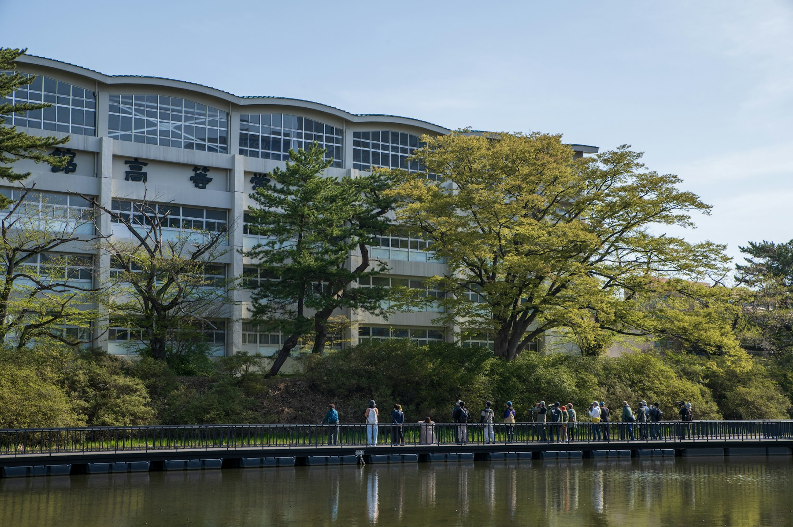

AOBA HIGH SCHOOL / SCHOOL GUIDE 2027
学校法人青葉学園 私立 青葉高等学校

1968年創立。全日制普通科・男女共学。各学年6クラス。基礎学力と探究学習を両輪に、自分で選び、仲間と学ぶ3年間を支えます。
総合：幅広く学び、自分の軸をつくる。
探究：問いを深め、社会に伝える。
国際：ことばを越えて、世界とつながる。
| 募集 | 240名（各コース80名） |
|---|---|
| 推薦試験 | 2027年1月22日／作文・面接・調査書 |
| 一般試験 | 2027年2月10日／国語・数学・英語・面接 |
| 初年度費用 | 800,000円（制服・教材等は別途） |
2026年9月26日 10:00／10月17日 10:00／11月14日 14:00。
学校説明、施設見学、個別相談をご用意しています。
バスケットボール、サッカー、テニス、陸上、吹奏楽、美術、科学、文芸・図書。興味と経験に合わせて挑戦を選べます。
※架空の学校の制作デモです。学校・所在地・日程・金額は架空で、写真はイメージです。出願・予約・資料発送は行いません。